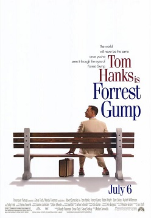
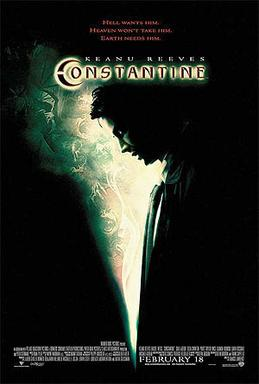

Moives

Hoop Dreams

Forrest Gump
The Hunted

Constantine
About
This documentary follows two inner-city Chicago residents, Arthur Agee and William Gates, as they follow their dreams of becoming basketball superstars. Beginning at the start of their high school years, and ending almost 5 years later, as they start college, we watch the boys mature into men, still retaining their "Hoop Dreams".
A man with a low IQ has accomplished great things in his life and been present during significant historic events - in each case, far exceeding what anyone imagined he could do. Yet, despite all the things he has attained, his one true love eludes him. 'Forrest Gump' is the story of a man who rose above his challenges, and who proved that determination, courage, and love are more important than ability.
A businessman on a trip to Tokyo ends up in the middle of a centuries old feud between a criminal Ninja cult and a Samurai when he witnesses a assassination performed by the Ninja-cult leader.
John Constantine has literally been to Hell and back. When he teams up with a policewoman to solve the mysterious suicide of her twin sister, their investigation takes them through the world of demons and angels that exists beneath the landscape of contemporary Los Angeles.